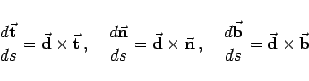
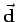
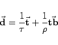
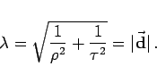

Inhalt Index DeskTop Bronstein

 Geometrie Differentialgeometrie Raumkurven Krümmung und Windung
Geometrie Differentialgeometrie Raumkurven Krümmung und Windung


Die FRENETschen Formeln (3.505) können auch in der einprägsamen Form
|  | (3.506) |
geschrieben werden. Dabei ist  der DARBOUXsche Vektor, der die Gestalt
|  | (3.507) |
hat.
Hinweise:
|  | (3.508) |